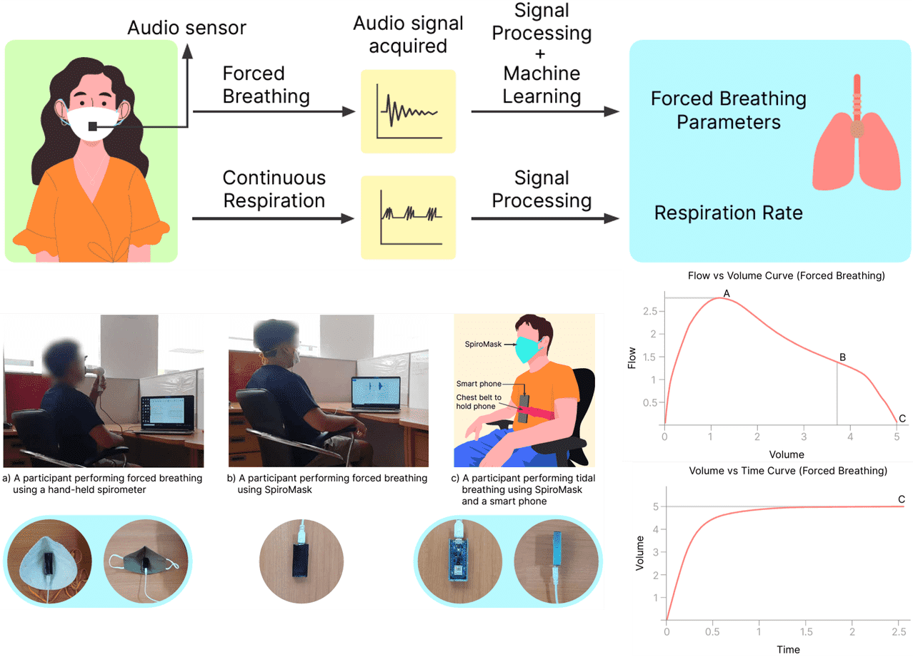
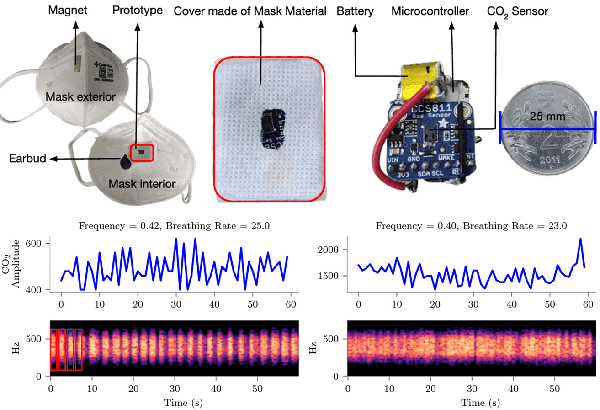

Sustainability Lab
Harnessing AI to create a sustainable future where technology serves both people and planet
Featured Research
Cutting-edge projects at the intersection of AI and sustainability

JoulesEye
Revolutionary energy expenditure estimation and respiration sensing from thermal imagery during exercise.

SpiroMask
Smart respiratory monitoring system transforming regular face masks into health sensing devices.

Space to Policy
Using satellite imagery and AI to monitor environmental compliance and inform policy decisions.

Continuous Respiration Detection
Advanced algorithms for real-time respiration rate monitoring during physical activity.
Funding Partners

🚀 Join Our Mission
Embark on a journey to drive innovation in sustainability through cutting-edge AI research.
Ready to make an impact? 🌟